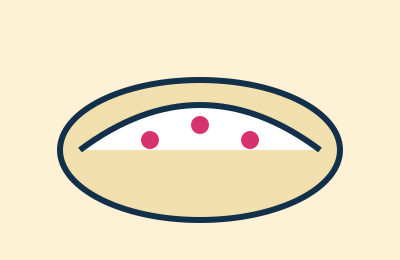
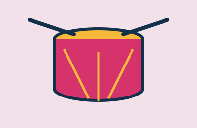

Um guia curto para conhecer o que há de melhor na capital pernambucana: lugares para visitar, o que comer e a cultura que move a cidade.
Marco Zero, Rua do Bom Jesus, Instituto Ricardo Brennand e mais.

Bolo de rolo, tapioca, caldinho e cartola: os sabores locais.

Frevo, maracatu e o Carnaval que toma as ruas.
Envie sugestões de lugares para incluirmos no guia.